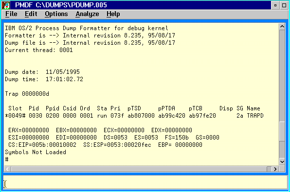
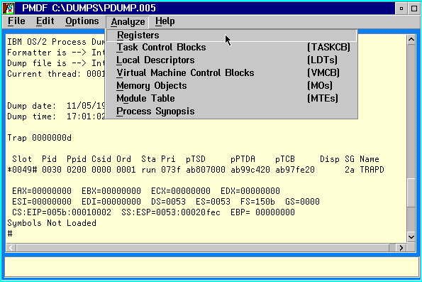

PMDF provides a Process Dump Formatter facility which is invoked automatically when the Open option of the File pull-down menu is selected against a Process Dump.
The Process Dump Formatter offers a limited subset of the full Dump Formatter command set. These are:
Note:
This command does not perform the same function as the similarly named Kernel Debugger .ML command, which formats VM Alias Records.
Note:
Unlike the Dump Formatter and Kernel Debugger version of this command, .P is used to select the thread ordinal within the dumped process. Thus for single thread processes .P 1 is the only valid combination.
Note:
Unlike the Dump Formatter and Kernel Debugger version of this command, .PB is used to select the thread ordinal within the dumped process. Thus for single thread processes .PB 1 is the only valid combination.
Note:
Unlike the Dump Formatter and Kernel Debugger version of this command, .S is used to select the thread ordinal within the dumped process. Thus for single thread processes .S 1 is the only valid combination.
Note:
Except where noted above, the command set for the Process Dump Formatter does not support any of the optional parameters supported by their equivalent Kernel Debugger commands.
When a Process Dump is loaded PMDF displays the following screen:
Note:
The data and time of the dump are displayed.
If the dump was created because of a trap then the trap number is displayed otherwise the trap number is shown as ffffffff.
The current thread slot and register are shown last.
The Analyze pull-down menu differs from the standard PMDF Analyze facility. This offers the following choices:
Registers
The Analyze option menu appears as follows:
For information on taking and controlling Process Dumps see:
The CONFIG.SYS DUMPPROCESS command.
The DosProcessDump API.